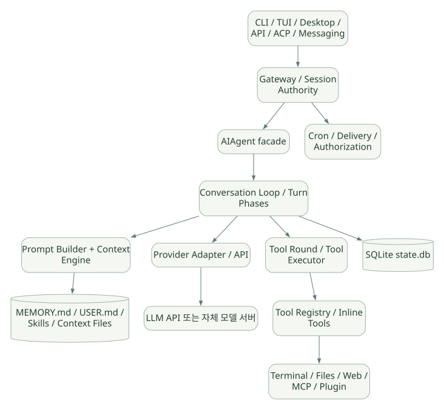

SECOND STUDY / 실행 계층과 요청 경로
실행 계층과 요청 경로
이번 단원의 읽는 관점
Gateway에서 AIAgent와 Turn Phase로 이어지는 경로를 따라갑니다. 모델 응답뿐 아니라 예산·중단·기록 실패가 실행에 미치는 영향을 읽습니다.
살펴볼 경계사용자 요청·API 호출·Tool 호출 수를 나누고 persist-before-execute의 범위를 확인하세요.
이 페이지의 세부 목차
1. 학습 목표와 증거 등급#
1.1 이 문서를 읽은 후 설명할 수 있어야 하는 것#
run_conversation()이 들어간 후 어느 조건에서 한 번 더 모델을 호출하거나 현재 Turn을 종료하는가?- 모델이
tool_calls여러 개를 돌려줬을 때 어디서 병렬/순차를 결정하고, 실제 어떤 실행기가 작동하는가? MEMORY.md쓰기가 어느 시점에 시스템 프롬프트에 반영되는가? 왜 바로 갱신하지 않는가?- 오래된 Tool 결과를 잘라 내는 것, 전체 대화 요약, Cache 재사용은 서로 어떤 다른 문제를 해결하는가?
- 보안 통제가 Prompt 지시인지, Tool 호출 시 가로채는 코드인지, OS/컨테이너 경계인지 구분할 수 있는가?
skill_manage가 Skill을 저장하는 동작과 그 Skill이 유효함을 보증하는 것은 왜 다른가?cronjob_manage로 예약한 일이 시스템 cron의 쉘 명령이 아니라 새 Agent Session의 실행이라는 것이 무슨 뜻인가?- Hermes를 서비스처럼 제공할 때 CLI 프로세스와 Gateway Session Authority, API/WS 표면의 역할은 무엇인가?
1.2 증거 등급: 이후 모든 코드 설명의 읽기 규칙#
| 기호 | 의미 | 사용 기준 |
|---|---|---|
| [SRC] | v0.22.5 공개 소스 확인 | 태그 고정 코드 위치·함수 또는 주석을 직접 확인함 |
| [DOC] | 공식 문서 명시 | 공식 제품/개발자 문서에 명시되어 있음; 문서와 태그 사이 차이는 가능 |
| [INF] | 정적 분석·설계 해석 | 공개 구현과 컴퓨터과학 원리로부터 추론, 사실과 분리 |
| [UNV] | 미확인·실험 필요 | 현재 열람한 코드만으로 결론 불가, 또는 실행 검증하지 않음 |
코드 제시 원칙: 아래 학습용 의사코드는 구조적 이해를 위한 재구성이며 실제 소스를 그대로 복사한 코드가 아니다. 소스 자체의 검토는 각 장의 태그 고정 링크에서 한다. 코드의 행 위치는 릴리스가 바뀌면 달라진다.
1.3 가장 먼저 비교해야 하는 개념#
| 개념 | 무엇을 제공하는가? | Hermes에서 어디에 있는가? |
|---|---|---|
| LLM | 다음 Token/Tool Call 결정 | 선택한 외부/로컬 모델 Provider |
| Agent Loop | 모델 재호출과 실행 반복·종료 제어 | agent/conversation_loop.py, turn_*.py |
| Agent Harness | 도구·상태·메모리·보안·런타임 통합 | Hermes 전체 실행 환경 |
| SDK | 개발자가 호출하는 프로그래밍 인터페이스 | 다른 시스템이 Hermes를 제어하는 API·통합 표면과 구별 |
| Framework | 애플리케이션의 실행·확장 틀 | Hermes의 Registry/Plugins/ContextEngine 등 일부 프레임워크적 성격 |
| Serving | 여러 요청/세션에 실행을 노출 | Gateway, API, WebSocket 및 각 Adapter |
| LLM Inference Serving | 모델 자체의 Token 추론 서버 | Hermes 본체와 별개 (예: 로컬 모델 Provider) |
SDK vs 라이브러리 vs 프레임워크: SDK는 '소프트웨어 개발을 위한 인터페이스와 도구를 묶은 배포 단위'라는 뜻이고, 라이브러리/프레임워크는 코드 구조·제어 흐름의 성격을 나타내므로 완전한 양자택일이 아니다. Hermes를 'SDK냐 Framework냐' 중 하나로만 분류하면 제품의 핵심인 완성형 Agent Runtime을 놓친다. [INF]
2. Hermes의 소프트웨어 경계와 계층 구조#
2.1 층별 아키텍처#
가로로 이동해서 읽을 수 있습니다. 도식 크게 보기 ↗

원문의 학습용 도식입니다. 연결 방향·분기 조건·점선·쌍방향 연결을 보존해 세로로 배치했습니다. 실제 구현·의사코드·해석의 구분은 본문을 함께 읽으세요.
도식 원문 보기 (Mermaid)
flowchart TB
IN[CLI / TUI / Desktop / API / ACP / Messaging] --> G[Gateway / Session Authority]
G --> A[AIAgent facade]
A --> L[Conversation Loop / Turn Phases]
L --> P[Prompt Builder + Context Engine]
L --> M[Provider Adapter / API]
M --> LL[LLM API 또는 자체 모델 서버]
L --> X[Tool Round / Tool Executor]
X --> R[Tool Registry / Inline Tools]
R --> T[Terminal / Files / Web / MCP / Plugin]
L --> DB[(SQLite state.db)]
P --> F[(MEMORY.md / USER.md / Skills / Context Files)]
G --> C[Cron / Delivery / Authorization]AIAgent는 외부에 보이는 진입 Facade이고, 실제 Turn 단계는 분리된 agent/turn_*.py와 agent/conversation_loop.py가 담당한다. Tool은 기본적으로 tools/registry.py에서 관리하지만 일부 Agent 특수 Tool은 Inline 경로로 처리한다. 세션 DB와 Prompt용 Memory 파일은 서로 다른 저장소다. [DOC][SRC]
공식 문서: https://hermes-agent.nousresearch.com/docs/developer-guide/architecture
코드: https://github.com/NousResearch/hermes-agent/blob/v0.22.5/agent/conversation_loop.py
2.2 상태의 '소유자'를 구분하자#
| 상태 종류 | 예시 | 소유·수명 | 주의 |
|---|---|---|---|
| Turn-local | 이번 응답, 재시도 횟수, 중단 신호 | 개별 요청/Turn | 다음 Turn으로 새면 안 됨 |
| Session transcript | user/assistant/tool 메시지 | Session Authority / SQLite | 여러 프로세스가 임의 쓰기하면 일관성 문제 |
| Built-in memory | MEMORY.md, USER.md |
프로필 단위 파일 | 프롬프트에는 세션 시작 시 스냅샷 |
| Skill | SKILL.md 및 reference 파일 |
프로필/외부 Skill 디렉터리 | 필요할 때 본문을 로딩 |
| Tool registry | 이름·Schema·Handler·가용성 | 실행/프로필 및 Session Scope | 모델 노출과 실제 호출 권한을 함께 확인 |
| Provider cache | Prefix 결과·비용 계산 | 모델 제공자 서버 | Hermes의 로컬 히스토리와 다름 |
| Cron jobs | jobs.json 및 실행 기록 |
프로필의 Scheduler | 기존 대화와 독립적인 실행 |
아키텍처 학습의 첫 원칙: 어떤 기능이 있는지만 보지 말고, '누가 소유하는 상태인가 / 누가 수정하는가 / 언제 반영되는가 / 오류 시 어디까지 복구되는가'를 질문한다.